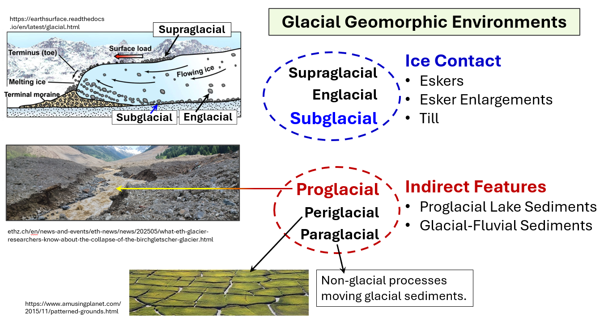
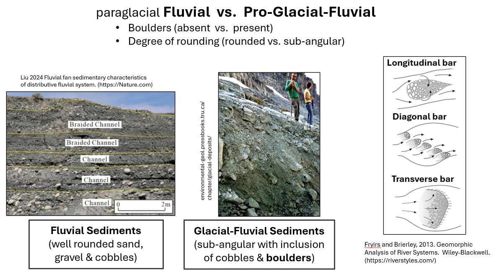

This short introduction to glacial geomorphology focuses on the glacial geomorphic features that are common in the
Upper Narraguagus River valley.
Table of Contents
- Glacial Geomorphic Environments
- Etc.
- Etc.


SubArea_1_Overview
Main Page